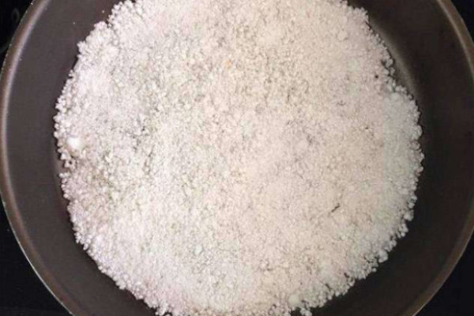

Tapioca

Tapioca Clássica
Ingredientes
- Goma de Tapioca Hidratada
Modo de Preparo
- Peneire uma porção de goma de tapioca hidratada em uma vasilha.
- Preaqueça a frigideira, de preferência antiaderente.
- Com uma colher, polvilhe a tapioca na frigideira preenchendo toda sua superfície com a goma.
- Passe a colher sobre a tapioca para que um lado não fique maior que o outro, tornando-a plana e uniforme.
- Aqueça na frigideira por cerca de 5 minutos.
- Depois, basta acrescentar o recheio que preferir e enrolá-la para se servir.